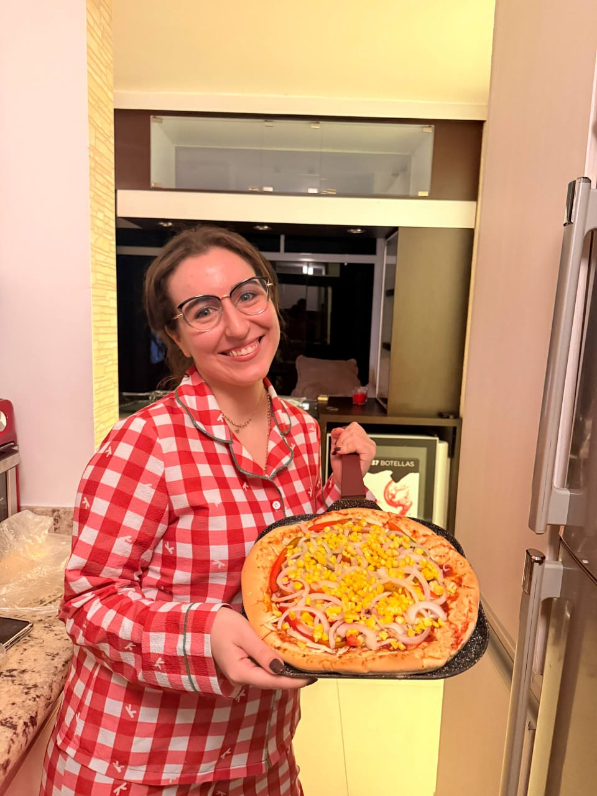
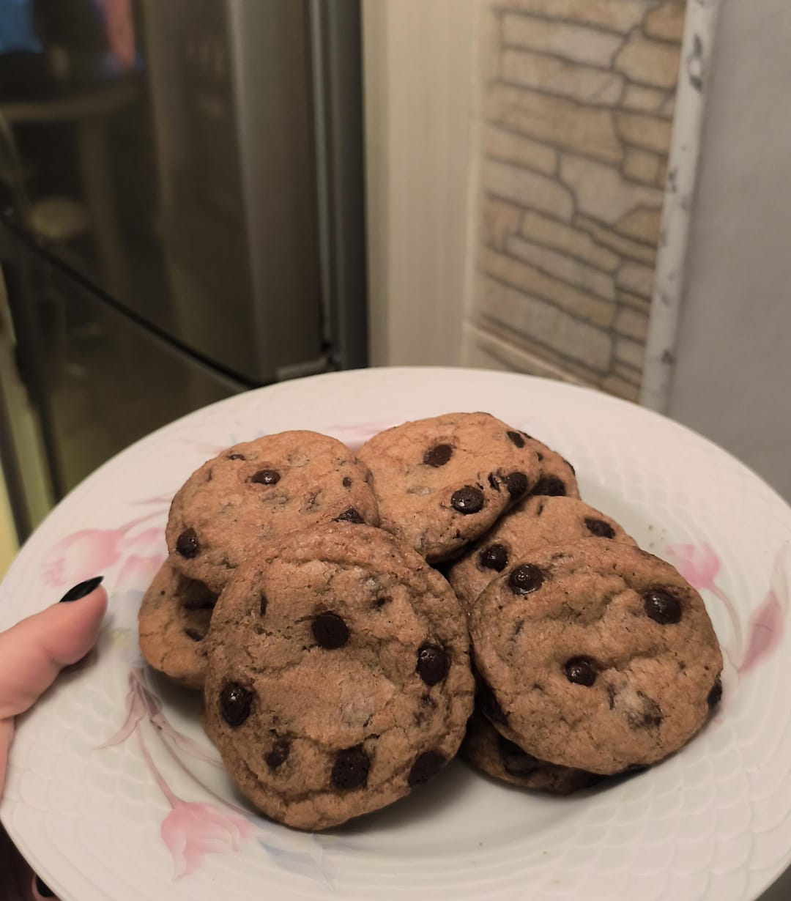

Recetario de Mimi

Si alguien me hubiese dicho que terminaria amando la cocina, me reiria en su cara. Pero aqui estoy, escribiendo un recetario donde pretendo compartir mi viaje en esta nueva pasion culinaria que cada dia crece con mas fervor. Y pretendo debutar con mi ultima creacion: unas cookies con chispas de chocolate que, para ser las primeras, fueron todo un exito. Sin mas que decir, aqui va la receta.
Galletas con chispas de chocolate
Crujientes por fuera, suavecitas por dentro, con ese inconfundible aroma a infancia. Aqui te dejo todos los secretos para preparar unas cookies deliciosas. Esta receta esta sujeta a modificaciones a medida que perfeccione la tecnica, por supuesto.
Lista de ingredientes:
- 100 gramos de mantequilla sin sal, temperatura ambiente.
- 1 taza de harina de trigo todo uso.
- Media taza de azucar morena.
- Media taza de azucar blanca.
- Media cucharadita de bicarbonato de sodio.
- Una pizca de sal.
- Un huevo.
- Una cucharadita de esencia de vainilla.
- Aproximadamente media taza de chispas de chocolate (O al gusto).
Preparacion
- Derretir la mantequilla a fuego medio por aproximadamente 5-7 minutos o hasta que agarre un color ambar. Dejar reposando hasta que enfrie
- Tamizar la harina en un bol junto con bicarbonato de sodio y sal, mezclar y dejar a un lado.
- Incorporar en un bol la mantequilla derretida junto con azucar morena y blanca, mezclar hasta que se forme una pasta homogenea.
- Agregar un huevo y esencia de vainilla a la mezcla, seguir batiendo para que se incorporen los ingredientes.
- Ir agregando la mezcla de harina poco a poco mientras vas batiendo para evitar que se formen grumos, asi hasta echar toda la harina.
- Una vez lista la mezcla, agregar las chispas de chocolate y refrigerar por al menos dos horas.
- Una vez refrigerada la mezcla, precalentar el horno a 160 grados y preparar la bandeja para que no se peque. Como no tenia papel encerado, use aceite en aerosol antiadherente.
- Formar bolitas de masa, colocar mas chispas de chocolate por encima si quieres y acomodar en la bandeja. Procura dejar una separacion considerable entre una galleta y otra, porque con el calor se expanden y pueden unirse.
- Hornear por 10 minutos. Una vez listas, dejalas reposar por al menos otros 10 minutos antes de retirarlas de la bandeja. Hacer varias tandas si es necesario hasta agotar la mezcla.

Y asi puedes disfrutar de unas cookies super deliciosas con tu cafe o un vaso de leche fria. Buen provecho!